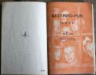
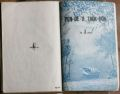

Languages
台文
｜
中文
｜
日本語
｜
English
字體
小
｜
中
｜
大
首頁
/
白話字數位典藏
白話字數位典藏全文檢索
查詢模式
選擇年代
清國時代(1885-1895)
日本時代(1895-1945)
戰後(1945-1969)
1885-1895
1896-1905
1906-1915
1916-1925
1926-1935
1936-1945
1946-1955
1956-1965
1966-1969
1970-1980
1980-1990
1990-2000
2000-2010
2010-
選擇文類
詩
散文
小說
戲劇
傳記
選擇作者
陳清忠
陳清義
編輯部
柯設偕
吳天命
明有德
偕叡廉
周天來
劉華義
王守勇
林茂生
陳添旺
柯維思
王占魁
賴仁聲
陳瓊琚
雪峰逸嵐
吳清鎰
郭水龍
蕭樂善
許水露
葉金木
陳金然
章王由
廖得
鄭連坤
潘道榮
楊士養
梁秀德
劉約翰
周淑慧
高金聲
林燕臣
黃六點
蔡愛義
許有才
主筆
巴克禮
郭朝成
陳鳩水
張基全
陳明清
陳能通
拾穗生
顏振聲
卓恆利
傳道局
胡文池
劉主安
鄭兒玉
高俊明
Google Search
Yahoo Search
全部
刊名
標題
標題(教羅)
全文
全文(教羅)
作者
第1頁，共23頁(共453筆資料) 0.59969520568848sec
1
2
3
4
5
...
23
To Page
GO
文字列表
圖文列表
排序
日期
文類
刊名
作者
影像
[1958-1 淡水中學白話字史料(修編) 文類-選擇文類 作者--/-]
(49)
第五屆台灣總會議錄 [ Tē gō͘ kài Tâi-oân chóng-hoē gī-lio̍k ]
...

[1959-11 淡水中學白話字史料(修編) 文類-選擇文類 作者--/-]
(14)
幼稚課本 [ Iù-tī khò-pún ]
...
[1960-2 淡水中學白話字史料(修編) 文類-選擇文類 作者--/-]
(12)
白話字讀本第一冊 [ Pe̍h-oē-jī tho̍k-pún tē 1 chheh ]
...

[1960-7 淡水中學白話字史料(修編) 文類-選擇文類 作者--/-]
(15)
白話字讀本第三冊 [ Pe̍h-oē-jī tho̍k-pún tē 3 chheh ]
...
[1960-7 淡水中學白話字史料(修編) 文類-選擇文類 作者--/-]
(12)
繪圖字母 [ Hoē-tô͘ jī-bó ]
...
[1956-4 台灣教會報 文類-詩 作者-周天來/Chiu Thian-lâi]
讚美主閣活的詩 [ Chàn-bí Chú koh-oa̍h ê Si ]
Normal 0 0 2 false false false MicrosoftInternetExplorer4 /* Style Definitions */ table.MsoⁿormalTable {mso-style-name:表格內文; mso-tstyle-rowband-size:0; mso-tstyle-colband-size:0; mso-style-noshow:yes; mso-s...
[1956-6 台灣教會報 文類-詩 作者-周天來/Chiu Thian-lâi]
結婚式祝歌 [ Kiat-hun-sek chiok-koa ]
Normal 0 0 2 false false false MicrosoftInternetExplorer4 /* Style Definitions */ table.MsoⁿormalTable {mso-style-name:表格內文; mso-tstyle-rowband-size:0; mso-tstyle-colband-size:0; mso-style-noshow:yes; mso-s...
[1956-8 台灣教會報 文類-詩 作者-周天來/Chiu Thian-lâi]
雜錄:無通比的好朋友 [ CHA̍P-LIO̍K: Bô thang pí ê hó pêng-iú ]
雜錄:無通比的好朋友 (約翰15:13). 1956.08 第812號 p.25-26 (周天來 譯) 1. 咱逐家毋是無朋友， 通相佮交陪快樂； 無通比的至好朋友， 只有主耶穌基督； 雖是同胞骨肉的親， 也毋值上帝聖囝； 啥物人捌為我罪人， 來放拺伊的生命？ 2. 踮世間是罪人朋友， 歡喜予in來親近； 上天了後猶原一樣， 是榮光的大人君； 我是卑微污穢的人， 主寶血洗清罪惡； 施恩tháu放，賜我盼望， 通承接上帝的國。 3. 雖然承受主的救恩， 心袂曉誤主的疼； 離開正路，心目渾沌， 無榮光主的聖名； 親像按呢，歪chhoa̍h軟茈，...
[1956-8 台灣教會報 文類-詩 作者--/-]
結婚ê詩(2) [ Kiat-hun ê Si (2) ]
結婚ê詩(2)「婚姻人人tio̍h尊重」 (希伯來13:4) 1.懇求仁愛ê天父聽阮o-ló感謝祝福新婚ê 夫妻tī你面前teh khiāhō͘ in 穿 suí ê 衣服顯出仁愛模樣thang永遠服事基督榮光主tī地上 2. 雖有寶玉ê 庭園若無仁愛露水來論tek tī hit中央kiám有甚麼恩惠雖 tiàm卑微ê厝宅基督ê光照--來就得快樂，無欠缺感謝主ê仁愛 3.懇求仁愛ê天父照顧in行天路Hō͘ in歡喜背十架相疼koh saⁿ扶助備辦將來tī天--nih齊全仁愛，平安thang入榮光ê厝宅享受福氣無限阿們。附記: chit首詩thang用聖詩71首ê調來吟，因為外國也是用chi...
[1957-2 台灣教會公報 文類-詩 作者-卓恆利/Toh Hêng-lī]
主日學:耶穌來歷歌 [ Chú-ji̍t-o̍h:Iâ-so͘ lâi-le̍k koa ]
Normal 0 0 2 false false false MicrosoftInternetExplorer4 /* Style Definitions */ table.MsoⁿormalTable {mso-style-name:表格內文; mso-tstyle-rowband-size:0; mso-tstyle-colband-size:0; mso-style-noshow:yes; mso-s...
[1957-4 台灣教會公報 文類-詩 作者-卓恆利/Toh Hêng-lī]
耶穌來歷歌 [ Iâ-so͘ lâi-le̍k-koa ]
Normal 0 0 2 false false false MicrosoftInternetExplorer4 /* Style Definitions */ table.MsoⁿormalTable {mso-style-name:表格內文; mso-tstyle-rowband-size:0; mso-tstyle-colband-size:0; mso-style-noshow:yes; mso-s...
[1957-6 台灣教會公報 文類-詩 作者-卓恆利/Toh Hêng-lī]
主日學: 耶穌來歷歌 [ Chú-ji̍t-o̍h: Iâ-so͘ Lâi-le̍k-koa ]
Normal 0 0 2 false false false MicrosoftInternetExplorer4 /* Style Definitions */ table.MsoⁿormalTable {mso-style-name:表格內文; mso-tstyle-rowband-size:0; mso-tstyle-colband-size:0; mso-style-noshow:yes; mso-s...
[1957-8 台灣教會公報 文類-詩 作者-卓恆利/Toh Hêng-lī]
主日學: 耶穌來歷歌 [ Chú-ji̍t-o̍h: Iâ-so͘ Lâi-le̍k-koa ]
Normal 0 0 2 false false false MicrosoftInternetExplorer4 /* Style Definitions */ table.MsoⁿormalTable {mso-style-name:表格內文; mso-tstyle-rowband-size:0; mso-tstyle-colband-size:0; mso-style-noshow:yes; mso-s...
[1957-9 台灣教會公報 文類-詩 作者-卓恆利/Toh Hêng-lī]
耶穌來歷歌 [ Iâ-so͘ Lâi-le̍k-koa ]
Normal 0 0 2 false false false MicrosoftInternetExplorer4 /* Style Definitions */ table.MsoⁿormalTable {mso-style-name:表格內文; mso-tstyle-rowband-size:0; mso-tstyle-colband-size:0; mso-style-noshow:yes; mso-s...
[1959-4 台灣教會公報 文類-詩 作者-周天來/Chiu Thian-lâi]
雜錄:主耶穌的呼聲 [ CHA̍P-LIO̍K: Chú Iâ-so͘ ê Ho͘-siaⁿ ]
Normal 0 0 2 false false false MicrosoftInternetExplorer4 /* Style Definitions */ table.MsoⁿormalTable {mso-style-name:表格內文; mso-tstyle-rowband-size:0; mso-tstyle-colband-size:0; mso-style-noshow:yes; mso-s...
[1959-8 台灣教會公報 文類-詩 作者-周天來/Chiu Thian-lâi]
一生讚美主 [ It-seng chàn-bí Chú ]
Normal 0 0 2 false false false MicrosoftInternetExplorer4 /* Style Definitions */ table.MsoⁿormalTable {mso-style-name:表格內文; mso-tstyle-rowband-size:0; mso-tstyle-colband-size:0; mso-style-noshow:yes; mso-s...
[1959-12 台灣教會公報 文類-詩 作者-周天來/Chiu Thian-lâi]
雜錄:聖詩試作1首 [ CHA̍P-LIO̍K: Sèng-si chhì chok 1 siú ]
Normal 0 0 2 false false false MicrosoftInternetExplorer4 /* Style Definitions */ table.MsoⁿormalTable {mso-style-name:表格內文; mso-tstyle-rowband-size:0; mso-tstyle-colband-size:0; mso-style-noshow:yes; mso-s...
[1960-5 台灣教會公報 文類-詩 作者-高俊明/Ko Chùn-bêng]
安慰 [ An-uì ]
Normal 0 0 2 false false false MicrosoftInternetExplorer4 /* Style Definitions */ table.MsoⁿormalTable {mso-style-name:表格內文; mso-tstyle-rowband-size:0; mso-tstyle-colband-size:0; mso-style-noshow:yes; mso-s...
[1960-11 台灣教會公報 文類-詩 作者--/-]
永遠呵咾主的名 [ Eńg-oán o-ló Chú ê miâ ]
永遠呵咾主的名1960年11月863期 26 1. 我的上帝至高，至大。我欲永遠呵咾；祢的權能，奇事滿滿，逐世代攏傳報， 2. 我的上帝，至尊威嚴，榮光顯赫無比；祢的大恩，人人記念。呵咾祢的公義。 3. 主有憐憫，慈愛恩惠，閣無快快受氣；祢的憐憫，致蔭萬類。願大家呵咾祢。 4. 人人講起聖國榮光，談論主的權能；祢的所做，奇妙齊全，願人攏會分明。 5. 萬民應該攑目向祢，祢賜食物充足；祢的所行無毋公義，仁愛袂會測度。 6. 凡若敬畏，求叫主名，主欲佮in親近；心所意愛，祢欲做成，是落拯救大恩。A-men。 ...
[1956-12 台灣教會報 文類-詩 作者-卓恆利/Toh Hêng-lī]
耶穌來歷歌 [ Iâ-so͘ lâi-le̍k koa ]
Normal 0 0 2 false false false MicrosoftInternetExplorer4 /* Style Definitions */ table.MsoⁿormalTable {mso-style-name:表格內文; mso-tstyle-rowband-size:0; mso-tstyle-colband-size:0; mso-style-noshow:yes; mso-s...
第1頁，共23頁(共453筆資料)
1
2
3
4
5
...
23
To Page
GO
數位典藏國家型科技計劃
拓展台灣數位典藏計畫
版權所有 國立台灣師範大學 台灣文化及語言文學研究所©2008
10610 台北市和平東路一段162號│TEL 02-7734-5516│Fax 02-2358-2461
計劃簡介
典藏特色
執行架構
計畫典藏數位化流程
成員介紹
台灣白話字發展簡介
巴克禮牧師與《台灣教會公報》
廈門話字典-杜嘉德
白話字教學-打馬字
中國南方白話字發展
台灣基督教長老教會簡表
台灣基督教長老教會教會歷史委員會
《北部台灣基督長老教會教會ê歷史》
關於陳清忠
白話字文學：台灣文學的早春